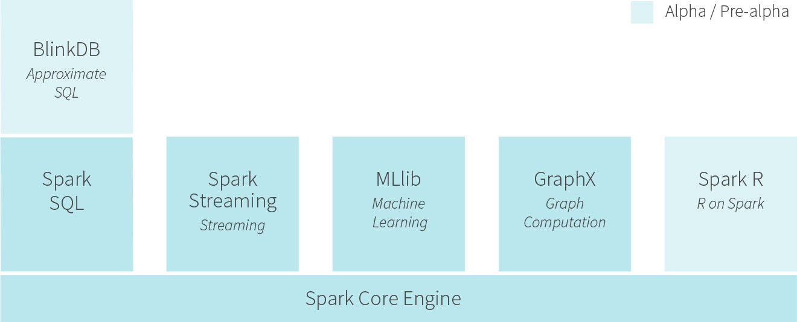

Apache Spark
Для новичков от новичков

Игорь Вовк
http://github.com/igorynia / http://facebook.com/igorynia
API есть для языков Scala, Java, Python
Вся робота со Spark сводится к созданию новых RDD, трансформациях над существующими RDD, или вызов операций c RDD для вызова результата
Основная структура данных – RDD
Расшифровывается как Resilien Distributet Dataset
- иммутабельная коллекция объектов
- каждый RDD разделен на несколько партишнов
Создание RDD
- можно загруить внешний датасет
- на основании коллекции объектов
val lines = sc.textFile("README.md")
val lines2 = sc.parallelize(List("pandas", "i like pandas")
Можно загружать данные из:
- с локальной ФС, NFS, HDFS, Amazon S3 в текстовом формате, JSON, CSV, хадуповские SequenceFiles, сериализованные java-объекты
- БД, поддерживаются Cassandra, HBASE, Elasticsearch и любую JDBC-совместимую
Операции с RDD
- трансформации - операции над RDD возвращают новый RDD
- map
- filter
- действия - возвращают результат в основную програму
- count
- first
Трансформации
- синтаксис похож на работу с коллекциями в Scala
- все операции lazy
- производятся только тогда, когда выполняется действие
- переиспользуемые данные можно заперсистить, вызвав метод .persist()
Действия
Операции, возвращающие данные в основную програму или записывающие данные во внешнее хранилище
Экосистема
Spark Streaming
Если нужно анализировать не только собранные данные, но и потоки c новыми данными в реалтайме.
Можно подключиться к HDFS, Flume, Kafka
Spark SQL
Можно выполнять SQL-запросы к данным Apache Hive, пишут что up to x100 раз быстрее чем Hive
GraphX
Работа с графами
Что почитать
- Документация https://spark.apache.org/documentation.html
- Learning Spark: Lightning-Fast Big Data Analysis http://www.amazon.com/gp/product/B00SW0TY8O/
- Cloudera engeneering blog http://blog.cloudera.com/blog/category/spark/
- Databricks blog https://databricks.com/blog